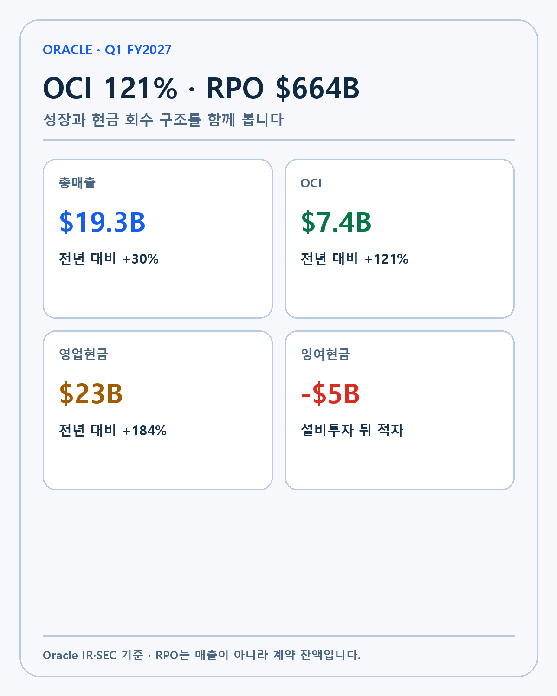
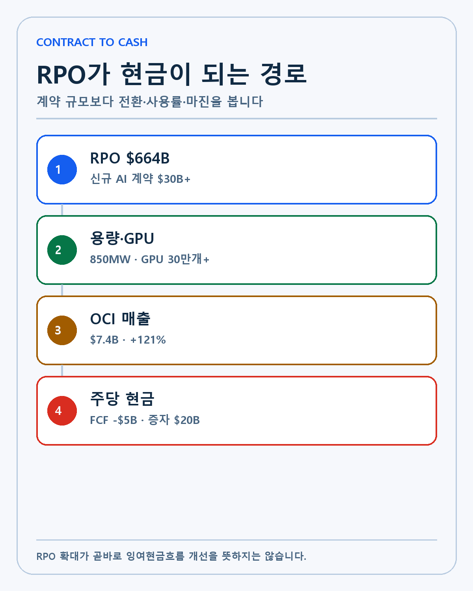
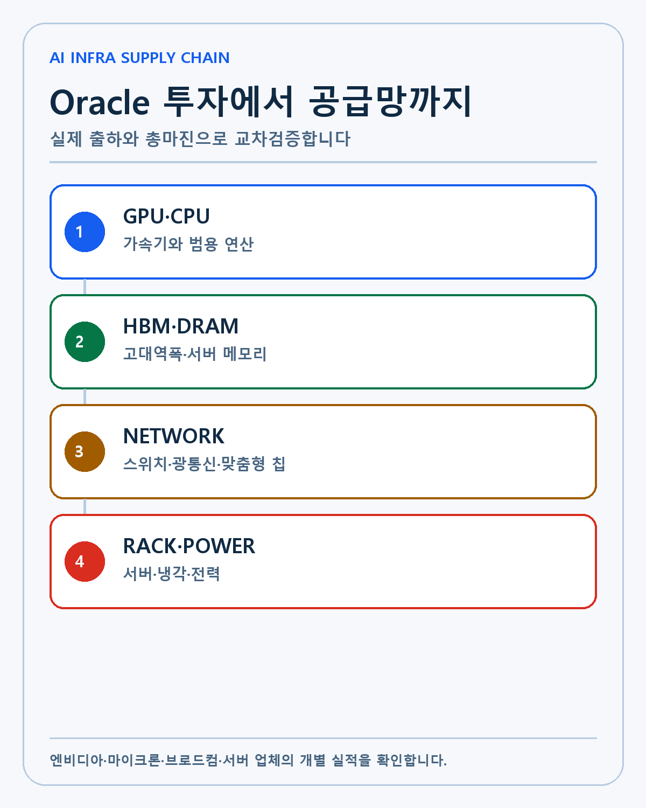
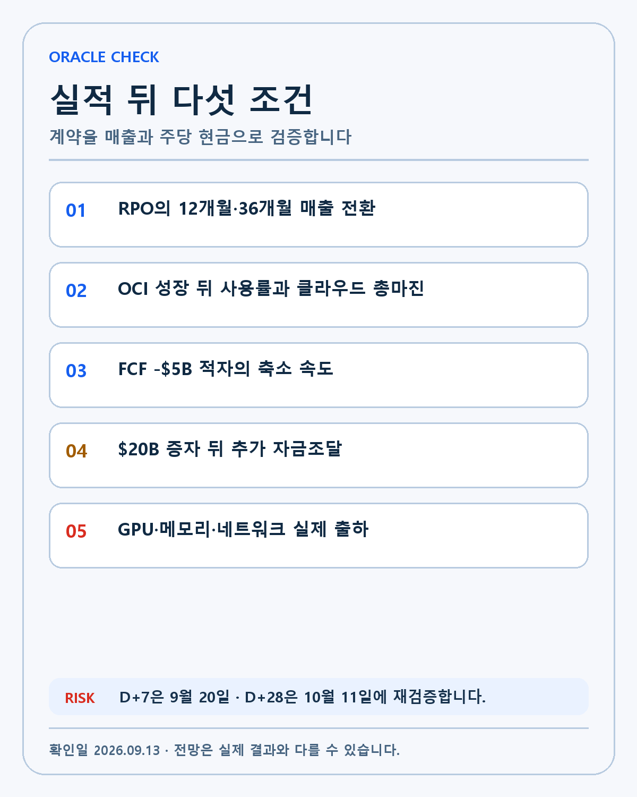

ORACLE · DEEP RESEARCH
Oracle Q1 FY2027 실적 분석: OCI 121%·RPO 6640억달러와 FCF 적자의 동시 해석
Oracle FY2027 1분기 OCI 121% 성장과 RPO 6640억달러를 FCF 적자·200억달러 증자·AI 공급망으로 나눠 검증합니다.
오라클의 FY2027 1분기 결과는 AI 인프라 투자 논쟁을 압축해서 보여 줍니다. 매출 성장률과 계약 잔액은 크게 높아졌고 실제 데이터센터 용량과 GPU 공급도 늘었습니다. 동시에 잉여현금흐름은 적자를 기록했고 회사는 200억달러 규모의 보통주를 시장에서 매각했습니다. 성장의 크기와 그 성장을 소유하기 위해 주주가 부담하는 비용을 같은 화면에 놓아야 합니다.
이 글의 질문은 오라클 실적이 좋았는가가 아닙니다. OCI의 121% 성장이 반복 가능한지, 6640억달러 RPO가 어느 속도로 매출과 현금으로 전환되는지, 투자비가 총마진과 감가상각을 거친 뒤 주당 가치로 남는지를 검증합니다. 결과와 회사 전망, 제 판단, 아직 확인되지 않은 부분을 분리하겠습니다.
확인된 실적 기준선
| 지표 | FY2027 1분기 | 변화 | 해석 범위 |
|---|---|---|---|
| 총매출 | 193억달러 | +30% | 회사 전체 성장 가속 |
| 클라우드 매출 | 116억달러 | +62% | OCI와 SaaS 합계 |
| OCI 매출 | 74억달러 | +121% | AI 인프라 수요 반영 |
| 클라우드 애플리케이션 | 42억달러 | +10% | SaaS 성장 지속 |
| 소프트웨어 | 55억달러 | -3% | 기존 사업의 클라우드 이동 |
| RPO | 6640억달러 | 전년보다 +2090억달러 | 미래 계약 잔액 |
| 영업현금흐름 | 230억달러 | +184% | 영업에서 유입된 현금 |
| 잉여현금흐름 | -50억달러 | 적자 | 설비투자 뒤 남은 현금 |

Oracle의 공식 실적 자료는 총매출 193억달러와 OCI 74억달러를 확인합니다. SEC 8-K는 같은 발표가 정식 공시로 제출됐음을 보여 줍니다. 실적 수치와 경영진의 미래 전망은 한 문서에 있지만 같은 성격은 아닙니다.
OCI 121% 성장의 질
OCI 매출이 전년보다 121% 늘었다는 사실은 공급 확대가 실제 매출로 연결됐음을 뜻합니다. 오라클은 분기 동안 데이터센터 용량 850MW를 추가했습니다. 지난 분기 말 이후 AI 클라우드 고객에게 제공한 GPU가 30만개를 넘었다고도 밝혔습니다. 단순히 계약만 받은 상태에서 벗어나 설비와 제품을 고객에게 전달한 증거입니다.
성장률의 분모도 봐야 합니다. OCI는 전년 동기보다 사업 규모가 커진 상태에서 두 배 이상 성장했습니다. 다음 분기에도 같은 비율을 유지하려면 절대 매출 증가액이 더 커집니다. 전력, 부지, 서버와 네트워크, GPU와 메모리의 공급이 동시에 따라와야 합니다.
오라클의 장점은 데이터베이스 고객과 클라우드 계약을 함께 보유한다는 점입니다. 기업이 기존 Oracle 데이터베이스를 AI 추론과 분석에 연결할 때 OCI를 선택하면 이전 비용과 데이터 이동 부담을 줄일 수 있습니다. 멀티클라우드 연결도 고객이 Oracle 데이터베이스를 다른 대형 클라우드 안에서 쓰도록 돕습니다. 이 구조가 신규 고객 유입과 기존 고객의 지출 확대를 동시에 만들 수 있는지가 장기 해자의 핵심입니다.
RPO 6640억달러의 의미와 오해
RPO는 계약됐지만 아직 매출로 인식되지 않은 금액입니다. 오라클은 1분기에 300억달러가 넘는 AI 클라우드 계약을 추가했다고 밝혔습니다. 계약 잔액이 지난 분기 6380억달러에서 6640억달러로 늘었기 때문에 매출로 전환되는 금액보다 신규 계약이 더 컸다는 뜻입니다.
RPO는 수요 가시성을 높이지만 현금과 같지 않습니다. 데이터센터가 준비되지 않거나 고객의 전력 연결이 늦어지면 계약이 있어도 서비스 제공 시점이 밀립니다. 장기 계약은 여러 해에 걸쳐 매출로 인식됩니다. 고객의 신용, 계약 취소와 최소사용 조건, 가격 재협상도 확인해야 합니다.
Reuters의 실적 후 분석은 회사 설명을 인용해 RPO의 약 절반이 36개월 안에 매출로 전환될 것으로 예상된다고 전했습니다. 이 비율은 회사 전망이며 실제 분기별 전환표가 아닙니다. 다음 12개월 RPO 비중과 매출 인식, 계약 잔액 증가를 함께 기록해야 합니다.
영업현금흐름과 잉여현금흐름이 갈린 이유

1분기 영업현금흐름 230억달러는 매우 강합니다. 고객 선급금과 영업이익이 현금 유입을 키웠습니다. 하지만 잉여현금흐름은 마이너스 50억달러였습니다. 데이터센터와 서버, 네트워크와 전력 설비에 들어간 자본지출이 영업현금보다 컸기 때문입니다.
두 지표 중 하나만 선택하면 판단이 왜곡됩니다. 영업현금흐름만 보면 투자 여력이 충분해 보이고 FCF만 보면 사업이 현금을 만들지 못하는 것처럼 보입니다. 실제로는 고객에게서 현금을 앞당겨 받으면서 동시에 더 큰 설비를 짓는 확장 국면입니다.
건설이 끝나고 사용률이 높아지면 같은 자산에서 반복 매출이 발생해 FCF가 개선될 수 있습니다. 반대로 신규 계약을 맞추기 위해 계속 더 큰 데이터센터를 지어야 한다면 높은 매출 성장과 FCF 적자가 오랫동안 공존합니다. 투자자가 확인할 지표는 설비투자 자체보다 투하자본수익률, 사용률, 클라우드 총마진과 유지보수 비용입니다.
200억달러 주식 발행이 주당 가치에 주는 영향
Oracle은 1분기에 ATM 프로그램으로 보통주 200억달러를 매각했습니다. 고객 수요를 놓치지 않으려고 설비투자를 앞당기는 대신 기존 주주의 지분율이 낮아질 수 있는 방법을 선택했습니다. 주식 발행으로 받은 현금이 높은 수익률의 데이터센터 자산으로 바뀐다면 장기 주당 가치가 늘 수 있습니다.
그 반대도 가능합니다. 데이터센터 마진이 낮거나 고객 계약이 늦어지면 발행으로 늘어난 주식 수만 남습니다. 매출과 영업이익이 늘어도 주당 이익과 주당 현금흐름의 성장률은 회사 전체 수치보다 낮아질 수 있습니다. 그래서 기업 성장과 주주 복리를 구분해야 합니다.
회사는 1분기 신규 계약 구조가 추가 자본조달 계획에 증분 부담을 주지 않는다고 설명했습니다. 고객 선급금이나 고객이 직접 제공하는 칩을 활용하면 Oracle의 현금 부담이 줄 수 있습니다. 실제로 자금조달 계획이 안정되는지는 향후 부채와 발행주식 수, 선수금과 계약자산을 통해 확인해야 합니다.
AI 공급망으로 이어지는 850MW와 GPU 30만개

데이터센터 용량 850MW와 GPU 30만개는 AI 설비투자를 물리적인 단위로 보여 줍니다. GPU는 혼자 작동하지 않습니다. HBM과 DRAM, CPU, 네트워크 스위치와 광모듈, 전력 변환과 냉각, 랙과 서버 조립이 함께 필요합니다.
엔비디아는 가속기와 네트워크 플랫폼을 공급합니다. 마이크론은 HBM과 서버 메모리, 브로드컴은 네트워크와 맞춤형 칩에서 연결됩니다. Dell과 HPE는 서버와 랙 단위 시스템을 조립하고 고객 환경에 맞춥니다. Oracle의 OCI 성장은 여러 계층의 주문이 같은 방향으로 움직일 수 있다는 수요 신호입니다.
HPE의 Q3 2026 실적 콜은 분기 매출 90억달러와 초대형 고객의 수십억달러 추론 서버 계약을 설명했습니다. Oracle 하나의 실적만으로 모든 공급업체 매출을 확정할 수는 없지만 AI 추론 인프라 투자가 서버와 네트워크 단계까지 확산됐다는 교차 신호입니다.
GPU 전달량과 실제 사용률은 다릅니다
30만개 이상의 GPU를 고객에게 제공했다는 사실은 공급 실행을 보여 줍니다. 하지만 설치된 GPU가 유료 작업으로 얼마나 사용되는지는 공개되지 않았습니다. 같은 장비라도 사용률과 시간당 가격, 전력비, 감가상각에 따라 수익성이 달라집니다.
고객이 장기 사용계약을 체결했더라도 최종 AI 서비스에서 수익을 만들지 못하면 계약 갱신과 추가 구매가 약해질 수 있습니다. Oracle의 고객이 하이퍼스케일러, AI 연구소, 네오클라우드와 기업으로 얼마나 분산됐는지도 중요합니다. 소수 고객 의존도가 높으면 한 계약의 지연이 실적에 미치는 영향이 커집니다.
기존 소프트웨어 감소를 어떻게 볼 것인가
기존 소프트웨어 매출은 3% 줄었습니다. 클라우드 전환 때문에 고객의 온프레미스 지출이 OCI와 SaaS로 이동한 결과일 수 있습니다. 이 경우 회사 전체 매출과 반복매출의 질이 좋아질 수 있습니다.
전환 과정에서 고객이 다른 데이터베이스와 클라우드로 이동하는 위험도 있습니다. OCI 성장률만 높고 기존 고객 기반이 빠르게 줄면 획득비용이 커집니다. 데이터베이스 유지율, 멀티클라우드 사용량, SaaS 성장률을 함께 봐야 Oracle의 해자가 유지되는지 알 수 있습니다.
시장 반응이 혼합된 이유
실적 다음 날 Oracle 주가는 장중 상승분을 지키지 못하고 하락 마감했습니다. 정확한 장중 고점과 종가 반응은 시장 보도에 따라 반올림 차이가 있어 방향만 사용합니다. 시장은 OCI 성장과 RPO 확대를 긍정적으로 보면서도 FCF 적자와 자본조달 부담을 다시 가격에 반영했습니다.
좋은 실적이 항상 당일 주가 상승으로 이어지지는 않습니다. 예상보다 높은 성장도 이미 높은 기대가 가격에 들어가 있으면 부족할 수 있습니다. 매출과 계약 잔액의 절대 수준, 기대 대비 차이, 주당 가치와 금리 환경을 분리해야 합니다.
다음 분기 가이던스가 요구하는 실행
Oracle은 FY2027 2분기 총매출이 30–34%, 클라우드 매출이 65–71% 늘 것으로 전망했습니다. 가이던스 상단을 달성하려면 현재 데이터센터 공급 확대가 중단 없이 매출로 이어져야 합니다.
매출 성장률과 함께 클라우드 총마진, 감가상각, 이자비용과 FCF를 보겠습니다. 매출이 30% 늘어도 비용이 더 빠르게 늘면 주주가 얻는 현금은 개선되지 않습니다. RPO의 신규 증가와 전환액, 고객 선급금도 분리해야 합니다.
고객 집중과 계약 구조
AI 클라우드 계약은 규모가 큰 만큼 소수 고객의 비중이 높아질 수 있습니다. 대형 AI 연구소와 네오클라우드, 글로벌 플랫폼 기업이 장기 용량을 예약하면 Oracle은 데이터센터 건설의 근거를 확보합니다. 반대로 특정 고객의 자금조달이나 제품 출시가 늦어지면 계약 전환과 사용률이 동시에 흔들릴 수 있습니다.
회사가 고객 이름과 계약별 조건을 모두 공개하지 않기 때문에 현재 집중도는 정확히 알 수 없습니다. 투자자는 분기 공시의 주요 고객 비중, 매출채권, 선수금과 계약자산 변화를 대신 봐야 합니다. 고객이 칩을 직접 제공하거나 선급금을 지급하는 계약은 Oracle의 초기 현금 부담을 줄이지만, 장기 수익성과 서비스 책임까지 없애지는 않습니다.
계약 기간이 길수록 가격 조건도 중요합니다. GPU와 전력 비용이 예상보다 오를 때 가격을 조정할 수 있는지, 최소 사용량과 갱신 조항이 있는지에 따라 마진이 달라집니다. RPO의 절대액보다 계약의 질을 판단할 정보가 더 필요합니다.
금리와 가치평가의 연결
Oracle은 설비투자와 자금조달 규모가 큰 기업이 됐습니다. 금리가 높으면 부채 비용과 데이터센터 프로젝트의 요구수익률이 올라갑니다. 같은 OCI 매출 전망이라도 현금이 먼 미래에 들어올수록 현재 가치는 낮아집니다.
반면 계약 잔액이 길고 고객 선급금이 충분하면 금리 부담을 일부 상쇄할 수 있습니다. 데이터센터 자산이 높은 사용률과 반복 매출을 만들면 초기 투자 뒤 현금창출 기간이 길어집니다. FOMC와 장기 국채금리는 Oracle 주가의 할인율뿐 아니라 고객의 AI 프로젝트 자금조달에도 영향을 줍니다.
저는 PER 하나로 이번 변화를 판단하지 않겠습니다. 매출 성장률, 발행주식 수, 순부채, 감가상각 전후 이익과 FCF 정상화 시점을 함께 놓고 주당 현금흐름 범위를 계산해야 합니다. OCI가 회사 구성을 바꾸는 동안 과거 소프트웨어 기업의 배수와 현재 AI 인프라 기업의 배수가 섞일 수 있습니다.
강세·기준·약세 시나리오
강세 시나리오에서는 신규 데이터센터가 높은 사용률을 확보하고 OCI 매출이 가이던스 범위에서 성장합니다. RPO의 매출 전환이 빨라지며 FCF 적자가 축소됩니다. 주식 발행으로 확보한 자금의 수익률이 자본비용보다 높아지면 주당 가치도 개선됩니다.
기준 시나리오는 매출과 계약은 강하지만 투자 주기가 길어 FCF가 당분간 적자인 경우입니다. AI 공급망 기업에는 주문이 이어지지만 Oracle 주주는 자금 회수까지 기다려야 합니다. 금리가 높으면 자본비용과 가치평가 부담이 커집니다.
약세 시나리오는 고객의 부지·전력·자금조달 지연으로 RPO 전환이 느려지고 OCI 성장률이 급격히 낮아지는 경우입니다. 데이터센터 비용과 감가상각은 이미 늘어난 뒤라 마진이 압박받습니다. 추가 증자나 차입이 반복되면 회사 성장과 주당 가치가 갈라집니다.
가설 무효화 조건

다음 중 여러 항목이 동시에 나타나면 AI 인프라 성장 가설을 다시 써야 합니다.
- OCI 성장률이 회사 가이던스를 크게 밑돌고 두 분기 이상 둔화합니다.
- RPO는 늘지만 12개월 매출 전환액이 따라오지 못합니다.
- 데이터센터 사용률과 클라우드 총마진이 개선되지 않습니다.
- FCF 적자가 커지면서 추가 주식 발행이나 부채 조달이 반복됩니다.
- 기존 데이터베이스 고객의 유지율과 SaaS 성장률이 함께 낮아집니다.
포트폴리오에 적용하는 순서
저는 Oracle 실적을 엔비디아·마이크론·브로드컴의 수요 확인 자료로 먼저 사용합니다. 실제 GPU 전달과 데이터센터 용량 증가는 AI 설비투자가 계속되고 있음을 보여 줍니다. 다음으로 각 공급업체의 출하량, 가격과 총마진에서 같은 신호가 나타나는지 확인합니다.
Oracle 자체를 평가할 때는 기술과 고객 기반, 성장률 다음에 현금흐름을 둡니다. OCI의 성장과 데이터베이스 해자는 강하지만 FCF 적자와 200억달러 발행이 남았습니다. RPO가 매출과 현금으로 전환되는 속도가 기술 가치를 주주 복리로 바꾸는 마지막 단계입니다.
다음 확인일은 9월 20일과 10월 11일입니다. D+7에는 FOMC와 국채금리, Oracle과 AI 인프라주의 반응을 기록합니다. D+28에는 신규 계약, 데이터센터 가동과 자금조달 업데이트를 확인합니다.
이 글은 개인 투자 기록이며 특정 종목의 매수·매도를 권유하지 않습니다. RPO와 회사 가이던스는 실제 매출·현금흐름을 보장하지 않으며 모든 투자 판단과 책임은 투자자 본인에게 있습니다.
작성 방법
2026년 9월 13일 기준 공식 자료와 공시를 우선하고 실제·회사 전망·시나리오·UNKNOWN을 분리했습니다.
개인 투자 기록이며 특정 종목의 매수·매도를 권유하지 않습니다.